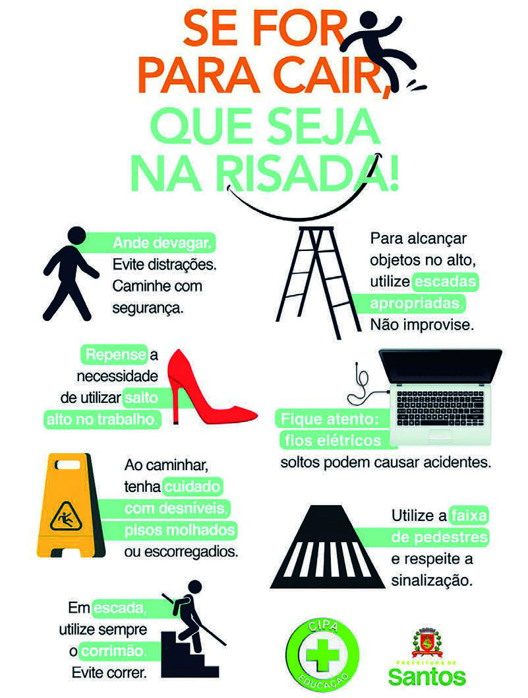

PODEMOS ENCONTRAR ANÚNCIOS EM ESPAÇOS PÚBLICOS, COMO OUTDOORS, PANFLETOS, FAIXAS OU CARTAZES, EM LOCAIS COMO ÔNIBUS, METRÔS E OUTROS.
A PRINCIPAL CARACTERÍSTICA DESSES TEXTOS É PERSUADIR O CONSUMIDOR A ADQUIRIR UM PRODUTO OU UM SERVIÇO OU ADERIR A UMA IDEIA.
OS PUBLICITÁRIOS, RESPONSÁVEIS PELA CRIAÇÃO DOS ANÚNCIOS, UTILIZAM IMAGENS, LINGUAGEM SIMPLES E HUMOR PARA CHAMAR A ATENÇÃO DO PÚBLICO-ALVO.
GERALMENTE, SÃO TEXTOS COM VERBOS NO IMPERATIVO PARA TRANSMITIR UMA MENSAGEM DIRETA E QUE CONVENÇA O LEITOR.
OS ANÚNCIOS PODEM SER COMPOSTOS DE TEXTO ESCRITO, DE ELEMENTOS VISUAIS (COMO IMAGENS E CORES), OU DE AMBAS AS COISAS.
LEITURA EM FOCO
1)
LEIA ESTE CARTAZ.

Reprodução/CIPA – Prefeitura de Santos
SE FOR PARA CAIR, QUE SEJA NA RISADA!
Ande devagar.
Evite distrações.
Caminhe com segurança.
Repense a necessidade de utilizar salto alto no trabalho.
Ao caminhar, tenha cuidado com desníveis, pisos molhados ou escorregadios.
Em escada, utilize sempre o corrimão.
Evite correr.
Para alcançar objetos no alto, utilize escadas apropriadas.
Não improvise.
Fique atento: fios elétricos soltos podem causar acidentes.
Utilize a faixa de pedestres e respeite a sinalização.
CIPA EDUCAÇÃO
Santos
CIPA. PREFEITURA DE SANTOS.
CARTAZ DE PREVENÇÃO DE QUEDAS.
CAMPANHAS 2022-2023.